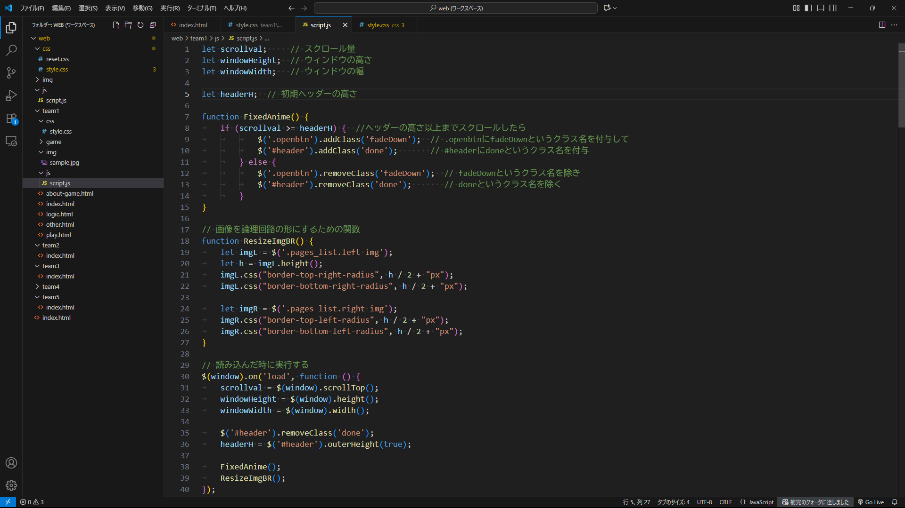
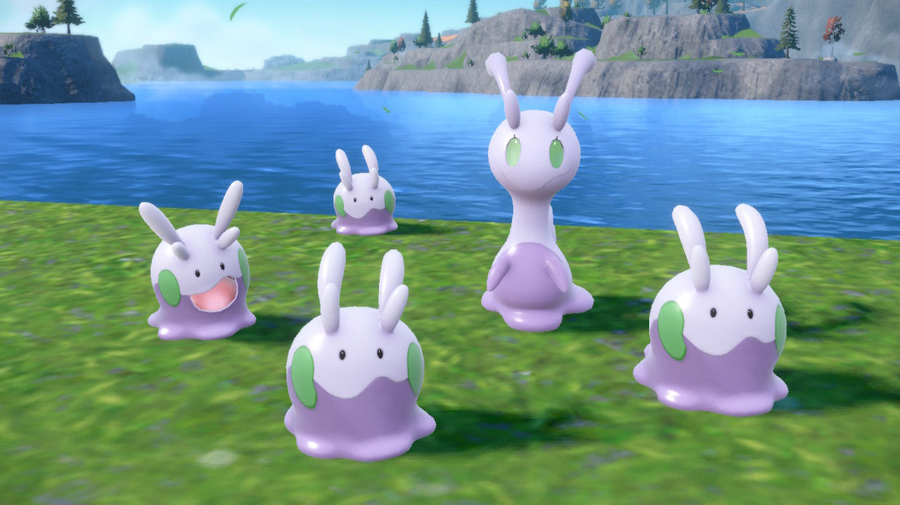
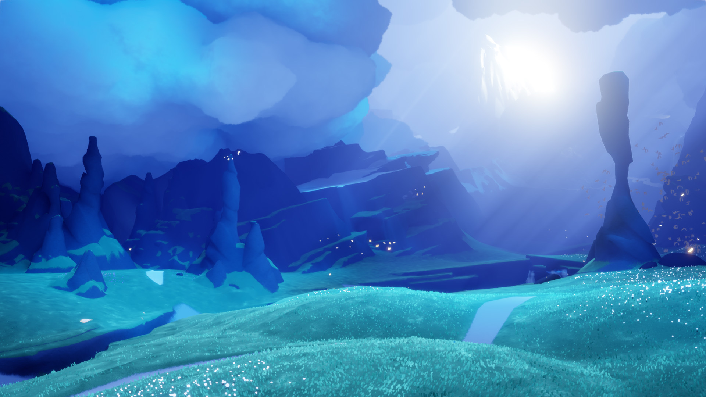

めじろじっく
Unityを利用した論理回路の
パズルゲーム制作
はじめに
めじろじっくって？
「めじろじっく」は、論理回路をテーマにしたパズルゲームです。
プレイヤーは回路部品をドラッグ＆ドロップで配置し、ワイヤーでつなげて回路を組みます。
入力の組み合わせに応じて正しい出力が得られるように配置し、真理値表の条件をすべて満たせばクリア！
豆電球の点灯や回路の動きを目で確かめられるので、遊びながら論理回路の仕組みを理解できます。
このテーマを選んだ理由
ゲーム開発エンジンとしてよく名前を聞くUnity に実際に触れてみたい、という思いが出発点でした。
せっかくなら遊ぶだけでなく学びにもつながる内容にしたいと考え、授業で学んだ論理回路を題材に選びました。
「作って楽しい、遊んで学べる」作品を目指し、このテーマに取り組みました。
ポスター発表
目白祭当日は、百305・百306（百年館低層棟3階）にてポスター発表を行います。
その場でゲーム体験もできますので、ぜひ遊びに来てください！
ページ一覧


